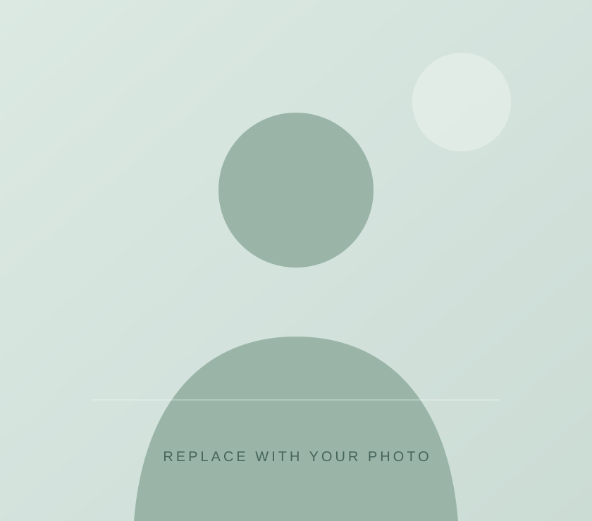

01
Data Science
Completed course
↗COMPUTER SCIENCE & ENGINEERING
A CSE student at KLE Institute of Technology, building a strong foundation in technology and learning through every new challenge.

YOUR PHOTO GOES HEREA LITTLE ABOUT ME
I am pursuing a Bachelor of Engineering in Computer Science and Engineering at KLE Institute of Technology. I have completed courses in Data Science and Web Development, and I am looking forward to growing my knowledge through practice.
Outside academics, I enjoy playing cricket and travelling.
WHAT KEEPS ME INSPIRED
Completed course
↗Completed course
↗Favourite ways to recharge
↗GET TO KNOW MY STORY
Explore my academic profile and personal details.
Read my bio-data ↗